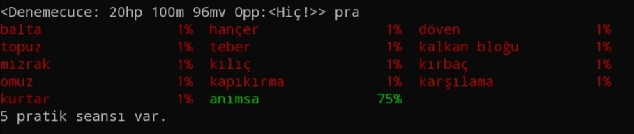

Uzak Diyarlar'a hoş geldiniz. Bu kılavuz size 5.seviyeye kadar rehberlik edecektir. Eğer kılavuzda söylenenleri harfiyen uygular, biraz sabırlı olursanız kısa zamanda 5.seviyeye ulaşır, oyunun temel mantığını kavrar ve mud okulundan mezun olursunuz. Oyunu zorlanmadan ve hızlı bir şekilde oynayabilmek için ilk karakterinizin cüce savaşçı olmasını şiddetle tavsiye ederiz. Oyunu biraz kavradıktan sonra istediğiniz ırk ve sınıfta yeni bir karakter açabilirsiniz. Ama temel kavramları anlayabilmek, çabuk ölmemek ve kılavuzu takip edebilmek için cüce savaşçı karakter en idealidir.(Kılavuz cüce savaşçı karaktere göre hazırlanmıştır.) Web sitesinin Yardım bölümünden Mud Okulu haritasını açarsanız, bölgenin kuşbakışı görünüşünü görürsünüz ve odalarda kaybolmadan bu haritayı takip ederek ilerleyebilirsiniz. Unutmayın karakteriniz 2.seviye olmadan kaydedilmez. O yüzden 2.seviye olmadan oyunu terk etmeyin. Çıkarsanız karakteriniz silinecek ve bütün karakter yaratma sürecini baştan yapmanız gerekecektir. Dua komutu ölümsüzlerden yardım istemek için kullanılan komuttur. Eğer oyunda yardım edebilecek ölümsüz varsa çağrıya hemen cevap verir. Ayrıca oyunda bulunan diğer iletişim kanalları hakkında bilgi almak için İletişim bölümünü okuyunuz.
Oyun birbirine bağlı odalardan oluşuyor. Her odanın kendine ait bir adı ve tanımı var. Aşağıda oyunda karakterimizin ayak bastığı ilk oda yani mud okulu girişini görüyoruz.
Her odanın belli çıkışları vardır. Çıkışlar her oda tanımının altında belirtiliyor. BAK komutuyla bulunduğumuz odayı ve içinde bulunan kişileri görebiliriz.
Suflör, mud oynarken her komut girdiğimizde ekranınızda çıkan ve size yaşam puanı(Yp), mana puanı(Mp), hareket puanı(Hp) ve saldırdığınız düşmanın yaşam puanı hakkında bilgi veren önemli bir satırdır. Aşağıda örnek bir suflör çıktısı görülmektedir:
Oyuncular kimi zaman suflör komutunu kullanarak istemeden suflörün gizlenmesini neden olurlar. Bu durum sıkıntı yaratır. Çünkü mud gibi aksiyon dolu bir oyunda oyuncunun karakterine ait yaşam puanı ve mana gibi bilgileri görememesi tehlikelidir. Böyle bir durumda yapılması gereken şey suflör yazıp entera basmaktır. Eğer suflör komutu yanlış parametrelerle kullanılıp bozulduysa, suflör tümü yazarak eski haline getirilebilir.
Oyun birbirine bağlı odalardan oluşuyor. Bu odalar bal peteğindeki odacıklara benzer. Birbirlerine bağlanırlar ve bölgeleri oluştururlar.
Odalar birbirlerine şu yönlerle bağlanabilir: kuzey, güney, doğu, batı, yukarı ve aşağı.
Odalar arasında ilerlemenin en temel yolu yürümektir. Bir odadan diğerine geçmek için yön isimlerini komut olarak kullanmak gerekir. Mud'ın güzel taraflarından biri, komut olarak uzun uzun kuzey yazmak yerine yalnızca k yazabilmenizdir.
Örneğin “Mud Okulu Girişi”'ndeyseniz kuzey ya da kısaca k yazıp enter tuşuna basarsanız “Mud okulunda bir oda” isimli odaya varırsınız.
Mud okulunda hemen hemen her odada temel komutları öğreten bir takım işaretler vardır. Bu işaretlerde yazanları görebilmek için bak işaret komutu verilir. İkinci odamızda bulunan işaret bize karakterimiz hakkındaki bilgileri öğrenmek için skor komutunu girmemizi ve niteliklerimizi arttırmak için eğitim, pratiğimiz arttırmak için pratik odalarını kullanmamızı söylüyor. Şimdi anlatılanları uygulayalım ve skor komutunu girelim.
Aşağıda mud okulunun haritası ve bölümleri gösterilmektedir. Bu kuş bakışı görüntü sayesinde nerede olduğunuza dair kafanızda bir fikir oluşacaktır. Kaybolduğunuzda buraya bakarak yönünüzü bulabilirsiniz. Unutmayın, kaybolursanız veya bir düşmana yenilmek üzereyseniz anımsa yazıp entera basmanız yeterlidir. Böylece Mud okulu girişine gönderilirsiniz. Buradan hem yolunuzu daha rahat bulursunuz hem de ölmek üzereyseniz kurtulmuş olursunuz.
Dövüşlere girmeden önce yeni yarattığımız karakterin nitelik eğitimleriyle uğraşmalıyız. Bildiğiniz gibi her karakterin 6 niteliği bulunuyor: Güç, zeka, bilgelik, çeviklik, bünye, karizma.
Yeni yaratılan her karaktere belli miktarda eğitim seansı verilir. Daha sonrasında eğitim seansları ancak seviye atladıkça kazanılabilir.(5 seviyede 1 eğitim seansı)
Nitelik eğitimini her odada yapamazsınız. Bu iş için bir eğitim odası bulmanız gerekir. Bulunduğumuz odanın tanımında batı yönünde bir eğitim odası olduğu belirtiliyor. Batı ya da kısaca b komutunu girerek batı yönündeki eğitim odasına ilerleyelim.
Eğitim yapmak için kullanmamız gereken komut eğitim. Şimdi eğitim yazıp entera basalım. Bu şekilde kaç eğitim seansımız olduğunu ve hangi niteliklerimizi eğitebileceğimizi öğreneceğiz.
Size tavsiyemiz öncelikle bünye daha sonra zeka ve üçüncü olarak da bilgelik niteliklerini sonuna kadar eğitmenizdir. Güç, çeviklik ve karizmayı ilerleyen seviyelerde kazandığınız eğitim seanslarıyla eğitebilirsiniz. Eğitimde en önemli olan bünyedir. Çünkü bünye karakterimizin seviye başına aldığı yaşam puanını doğrudan etkiler. Bünye ne kadar yüksekse her seviyede yaşam puanımız o kadar çok artar. Düşük bünyeyle seviye atlarsanız geri dönüşümsüz olarak daha az yaşam puanı almış olursunuz. Dolayısıyla bünyenizi sürekli maksimumda tutun. Şimdi bünyeyi eğitmeye başlayalım. Bunun için eğitim bün komutunu kullanacağız:
Bu işlemi bünyenin eğitimi bitene kadar tekrar edelim. Aynı komutu birkaç kez üst üste girmek için yukarı tuşuna basıp entera basabilirsiniz.
Görüldüğü gibi nitelikler belirli bir noktaya kadar eğitilebilirler. Bu yüzden eğitimi tamamlanmış nitelikler "eğitim" yazıp entera basıldığında listede görülmemeye başlar.
Eğitimde ikinci derecede önemli olan ise zekadır. Çünkü zeka ne kadar yüksek olursa yeteneklerimiz için harcayacağımız pratik seansı o kadar az olur. Bunu ileride açıklayacağız. Üçüncü derece önemli olan ise bilgeliktir. Çünkü bilgelik her seviyede kazandığımız pratik seansı sayısını etkiler. Dolayısıyla düşük bilgelik ile atladığınız her seviye toplamda kazandığınız pratik seansını azaltır.
Eğitim seanslarımızın tamamını harcadıktan sonra pratik yapmak için pratik odasına gidebiliriz. Bunun için öncelikle doğu komutuyla geldiğimiz odaya geri dönelim. Daha sonra bir kez daha doğu komutu girerek, oda tanımında belirtildiği gibi doğudaki pratik odasına gidelim.
Şimdi pratik komutunu kullanarak pratik yapabileceğimiz yetenekler hakkında bilgi alalım. Bunun için pratik yazıp entera basın.

Gördüğünüz gibi anımsa hariç kalan herşey %1. Bu o yeteneğin veya büyünün bilinmediği anlamına geliyor. Bir yeteneğin veya büyünün, pratik ile gelebileceği en üst nokta %75'tir. %75 ile %100 arası gelişim ancak yeteneği-büyüyü kullanırken sağlanır. %75 yapabilmek için kaç pratik seansı harcamanız gerektiği ise tamamen karakterinizin zeka niteliğiyle ilgilidir.
Pratik konusu eğitimden farklıdır. Oyuncular her yeni seviyede pratik seansı kazanır. Pratik konusunda standart bir öncelik sırası yoktur. Neyi pratik edeceğimize nasıl karar vereceğiz? Bunun kesin bir yolu yok. Sınıfa-ırka göre değişiyor. Fakat bir gerçek var ki, ilk önce silah yeteneklerinden birini pratik etmek gerekiyor. Yukarıdaki listede farklı tipte silah yetenekleri var. Kılıç, hançer, teber, döven, balta, topuz, mızrak ve kırbaç. Bunlardan hangisini pratik edeceğiz? Elbette ki, oyuna ilk girdiğimizde bize verilen silah hangi türdense onu pratik edeceğiz. Bir savaşçı açtıysanız elinizde bir kılıç olmalı. Taşıdığınız şeyleri görmek için envanter komutunu kullanabilirsiniz. Şimdi envanter komutunu kullanarak elinizde hangi silah türünden olduğuna bakın.
Bir yeteneği pratik etmek demek onu kullanmayı öğrenmek demektir. Kılıcın nasıl kullanılacağını bilmeyen biri dövüş sırasında elindeki kılıcı kullanamaz. Şimdi örnek bir anlatım olarak kılıcı pratik edeceğiz. Bu işlemi diğer yetenek ve büyülere uygulayabilirsiniz. Pratik kılıç komutunu girelim. Bu işlemi kılıcı öğrenene kadar tekrarlıyoruz. Öğrendiğimizde “Kılıç konusunu öğrendin.” şeklinde bir bildirim çıkar. Kılıcın pratiğinin yüzde kaça yükseldiğini pratik yazarak görebilirsiniz.
Kalan pratik seanslarınızla (eğer savaşçıysanız) "omuz" ve "karşılama" yeteneklerini pratik edebilirsiniz. Pratik listesinde çıkan yetenek ve büyüler hakkında bilgiyi menüdeki Yetenekler başlığında bulabilirsiniz. Pratiği bitirdikten sonra bir kez batıya ilerleyerek bir önceki odaya geri dönüyoruz.
Eğitim ve pratiği tamamladıktan sonra bu iki odanın ortasındaki odaya döndüğümüzde kuzeye doğru bir çıkış olduğunu görüyoruz. Kuzey ya da kısaca k diyerek devam edelim.
Bu odanın bir önceki odadan çok bir farkı yok. Sadece çıkışları farklı ve yine duvarda bir işaret var. Bak işaret diyerek duvardaki işareti incelediğimizde bizim için önemli olan birkaç temel komutu görüyoruz. Envanter komutu taşıdığımız eşyaları gösterir. Ekipman ise üstümüze giydiğimiz ekipmanları gösterir. Envanterimizde bulunan giyilebilir tüm ekipmanları giymek için giy tümü komutunu veriyoruz. Bu komutu tek başına bir ekipmanı giymek için de kullanabilirsiniz. Mesela giy yelek diyerek sadece yeleği giyebiliriz. Aynı şekilde çıkar yelek diyerek de sadece yeleği çıkarabiliriz. Birşeyi yerden veya bir taşıyıcının içinden almak için al komutunu kullanırız. Örneğin yerde bir kalkan varsa, al kalkan diyerek yerden alırız. Kalkan artık envanterimize girmiş olur. Envanterdeki kalkanı giymek için yine giy kalkan komutunu kullanırız. Kalkan eğer bir taşıyıcının (bu bir ceset de olabilir, bir çanta da) içindeyse bu sefer komutun sonuna taşıyıcının ismini ekleriz. Mesela kalkan bir cesedin içindeyse al kalkan ceset ya da kısaca al kal ces yazarak, cesedin içindeki kalkanı alabiliriz. İşarette anlatılan komutları kavradıysak batıya doğru devam edelim ve “Merkez Oda” isimli odaya gidelim.
Bu odanın da yine incelenmesi gereken ve bir komut öğreten işareti var. Bak işaret dediğimizde çıkış komutu hakkında bilgi alabiliriz. Daha önceden de belirttiğimiz gibi Uzak Diyarlar’da 6 yön var. Kuzey, güney, batı, doğu, aşağı, yukarı. Bir odanın çıkışları her zaman oda tanımının altında yazar. Aynı zamanda çıkış komutuyla da bu çıkışları öğrenebiliriz. Bazen çıkış yönleri bir kapı ile kapatılmış hatta bu kapı da kilitlenmiş olabilir. Böyle bir durumda aç komutunu yön ismiyle beraber kullanarak kapalı kapı açılabilir. Mesela doğuda kapalı bir kapı varsa, aç doğu komutuyla doğudaki kapalı kapı açılabilir. Fakat bu kapalı kapı aynı zamanda kilitliyse o zaman kapıyı açabilmek için o kapıya ait anahtarı envanterimizde bulundurarak kilitaç doğu komutunu girmemiz gerekir. Kilit açıldıktan sonra aç doğu diyerek kapı açılır. Mud okulunun ileri safhalarında bunu uygulamalı olarak göreceğiz. Merkez odanın 6 yönde de çıkışı var. (Geldiğimiz oda ve devam edeceğimiz oda dahil) Yönleri denemek isterseniz farklı yönlere giderek merkez odaya geri dönebilirsiniz. Hazır olduğunuzda 2 kez kuzeye doğru devam edelim.
Bu odadaki işarette yine çok işimize yarayacak bir komut öğreniyoruz. Tart komutu. Tart diyardaki yaratıkların gücünü sizin karakterinizle kıyaslamak için kullanılan bir komuttur. Böylece karakterinizden çok daha güçlü olan yaratıklara saldırarak kendinizi boş yere öldürtmekten korunabilirsiniz. Bir şeye saldırmak için saldır komutunu kullanabilir aynı şekilde saldırı esnasında kaçmak için kaç komutunu kullanabilirsiniz. Karakterinizin belli bir yaşam puanının altına düştüğünde otomatik olarak kaçmasını istiyorsanız korkaklık komutu ile bunu ayarlayabilirsiniz. Örneğin korkaklık 10. Bu komutla karakteriniz dövüş esnasında, 10 yaşam puanının altına düştüğünde otomatik olarak kaçar. Fakat unutmayın diyardaki yaratıkların çoğu düşündüğünüzden daha zeki. Çoğu yaratık siz kaçsanız da izinizi sürerek sizi takip edecektir. İşarette belirttiği gibi öğrendiğimiz komutları aşağı yönünde bulunan canavarda uygulayabilirsiniz. Komutları denedikten sonra batı yönünde ilerleyip aşağı inerek Kafes Odaları Merkezi’ne gidelim.
Şimdi biraz hareket zamanı. Bu iş için en uygun yer ise Kafes Odaları. Kafes odaları Mud Okulu yöneticileri tarafından zayıflatılmış ve savaş eğitimi amacıyla kullanılan kafesler içindeki canavarlardan oluşan bir komplekstir. Kafes odalarına gitmeden önce karakterimizin sahip olduğu ekipmanları(zırh, silah vs.) giysek iyi olacak. Envanterimizde bulunan ekipmanları giymek için giy tümü yazıyoruz. Böylece giyilebilecek bütün ekipmanları giyiyoruz. (Tek tek giymek için giy kılıç, giy yelek de diyebiliriz.) Üstümüze giydiğimiz ekipmanları görmek için ekipman yazalım.
Kafes odaları merkezinin dört bir yanında (kuzey, güney, doğu, batı) kafesler ve bu kafeslerin içinde seviyemize uygun canavarlar var. Güneydeki kafese giderek ilk canavarımızı öldürebiliriz.
Rakiplerimizin bizden zayıf mı güçlü mü olduğunu anlamak için tart komutunu kullanıyoruz. tart canavar yazınca bu canavarın bizim için mükemmel eşleşme olduğunu anlıyoruz. saldır canavar diyerek canavara saldırıyoruz. Savaşçı karakterimizle dövüş sırasında omuz atarak canavarın sersemleyip yere düşmesini sağlayabiliriz.
Her mob (mobile kelimesinden gelir. oyunun yönlendirdiği yaratıklara verilen genel isimdir. Bazı mudlarda NPC olarak da geçer) öldürdüğümüzde belli miktarda tecrübe puanı kazanırız. Kazandığımız tecrübe puanları bizi bir sonraki seviyeye yaklaştırır.
Her canavar öldürdüğümüzde geriye cesedi kalır. Kafes odalarındaki her canavarda bizim işimize yarayacak ekipmanlar mevcuttur. Cesedin içinde ne olduğunu görmek için incele ceset (ya da kısaca inc ces) komutunu kullanabiliriz. Güneydeki kafes odasında bulunan canavarımızın cesedinde, bir adet kalitesiz miğfer ve bir adet kalitesiz pelerin var. Bunların tamamını cesedin içinden almak için al tümü ceset komutunu, tek tek almak içinse al miğfer ceset, al pelerin ceset komutlarını kullanabiliriz. Bu komut sadece cesetler değil bütün taşıyıcılar için geçerlidir. Yani ceset değilde taşıdığımız bir çantadan bir miğfer almak isteseydik, aynı şekilde al miğfer çanta diyecektik. Taşıyıcı ismi her zaman sonda olur.
Ekipmanları aldıktan sonra yine üstümüze giymek için giy tümü komutunu veya tek tek giymek için giy miğfer, giy pelerin komutlarını kullanabiliriz. Çıkarmak istediğimizde ise çıkar miğfer diyebiliriz. Fazla olan bir miğferi bırakmak istersek de bırak miğfer diyebiliriz. Mantık hepsinde aynı, önce fiil sonra nesne.
Eğer mud okulunda bütün canavarlardan tek tek ekipmanları almak sizi çok uğraştırıyorsa işe yarar iki komutumuz var. otoyağma ve otokurban. Otoyağma bir canavarı öldürdüğünüzde cesetteki bütün ekipmanları otomatik olarak almanızı sağlar. Bu ilk aşamada çok pratik de görünse ileride size biraz sıkıntı çıkarabilir. Çünkü belli bir taşıma kapasiteniz var ve gerekli gereksiz bütün ekipmanları alırsanız bir süre sonra envanteriniz dolacak ve yeni ekipman alamayacaksınız. Ama dediğim gibi mud okulunda bunu kullanıp daha sonra kapatabilirsiniz. Açıp kapatmak için sadece otoyağma yazmanız yeterli.
Otokurban ise öldürülen cesetlerin otomatik olarak kurban edilmesini sağlar. Bunun iki faydası var. Birincisi her kurban edilen ceset için belli bir miktar akçe kazanırsınız (ileride bakkaldan bir takım şeyler almanız için lazım olacak) ikincisi cesedin içerdiği bütün ekipmanlar odaya saçılır ve bak komutuyla odada olan ekipmanları görüp istediğinizi alabilirsiniz. Aynı şekilde bu komutu da otokurban yazarak açıp kapatabilirsiniz. Oto komutlar ileriki bölümerde daha ayrıntılı olarak açıklanmıştır.
Kuzeye ilerleyelim ve kafes odaları merkezine gidelim. Güneydeki kafeste uyguladıklarımızı batı, doğu ve kuzey yönlerindeki kafeslerde de uygulayalım. Her canavarda işimize yarayacak farklı ekipmanlar var. Canavarları öldürdükten sonra bunları alıp giymeyi unutmayalım.
Kuzeydeki canavar diğer kafestekilere göre biraz daha farklıdır. Diğer kafeslerde siz saldırmadığınız sürece canavarlar size saldırmaz ama kuzeydeki agresif diye tabir edilen özel bir mobdur. (mobile) Bu tip canavarlar siz odaya girer girmez otomatik olarak size saldırır. Diyarda böyle bir çok mob mevcuttur. Normal şartlarda sürpriz bir saldırı olduğu için tehlikeli olabilir ama mud okulunda güvendesiniz.
Birkaç canavar öldürdükten sonra 2.seviye olacağız ve artık karakterimiz oyundan her çıktığımızda otomatik olarak kaydedilecek. (Oyundan çıkmak için her zaman ayrıl komutunu kullanınız.)
Seviye her yükseldiğinde belli miktarda yaşam puanı, mana puanı, hareket puanı ve pratik seansı kazanırız. Her 5 seviyede 1 tane de eğitim seansı kazanılır. Karakterimiz hakkında ayrıntılı bilgi almak için skor tablosunu kullanabiliriz. skor yazarak bu tabloyu görmek mümkün.
Diğer bir işe yarar komut ise etki komutudur. Karakterin etkisi altında olduğu büyüleri gösterir. Özellikle büyücü sınıfların sıklıkla kullandığı önemli bir komuttur. Kafes odaları merkezindeki üstad bize bir takım koruma büyüleri yaptığı için etki yazdığımızda büyük ihtimalle üstümüzde bir iki büyü olduğunu görebiliriz. Kafes odalarını gezerken dinlenmek için üstadın yanı en ideal yerdir. Burada uyu komutuyla uyuyabilir(uyurken oda içinde olan şeylerin farkına varamazsınız), dinlen komutuyla dinlenebilirsiniz. Kalk komutuyla da ayağa kalkıp maceranıza kaldığınız yerden devam edebilirsiniz. Üstadın yanında dinlenirseniz hem yaşam puanınız daha hızlı dolacaktır hem de üstad size bir takım koruma büyüleri yapacaktır. Seviye iki olduktan sonra kafes odaları merkezinden aşağı inerek mud okulundan mezuniyetimize doğru ilerleyebiliriz.